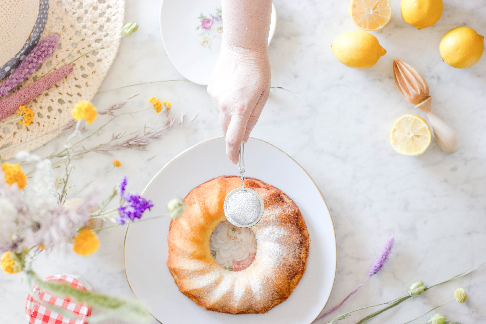

Limonlu Kek
Gereken Malzemeler
- 3 adet yumurta
- 1 su bardağı şeker
- 1 su bardağı süt
- 1 çay bardağı sıvı yağ
- 1 paket kabartma tozu
- 1 paket vanilya
- 2.5 su bardağı un
- 1 adet limon

Limonlu kek yapmak için;
- Yumurta ve şeker iyice çırpılır
- Limonun kabuğu rendenin küçük kısmı ile rendelenir. İçinin suyu sıkılır.
- Yumurtanın üzerine süt, limon suyu, limon kabuğu rendesi, sıvı yağ ve vanilya eklenir ve
karıştırılır.
- Son olarak un ve kabartma tozu elenerek hamura ilave edilir.
- Kek hamuru yağlanmış kalıba dökülerek 170 derece fırında 45 dakika kadar pişirilir.
- Kekin üzerine pudra şekeri serperek ve limon kabukları ile süsleyerek servis edebilirsiniz.
- Limonlu kekimiz hazır, deneyeceklere afiyet olsun…